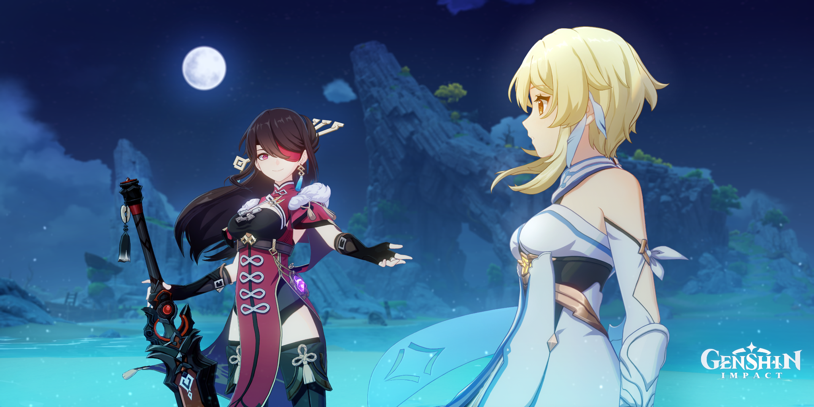
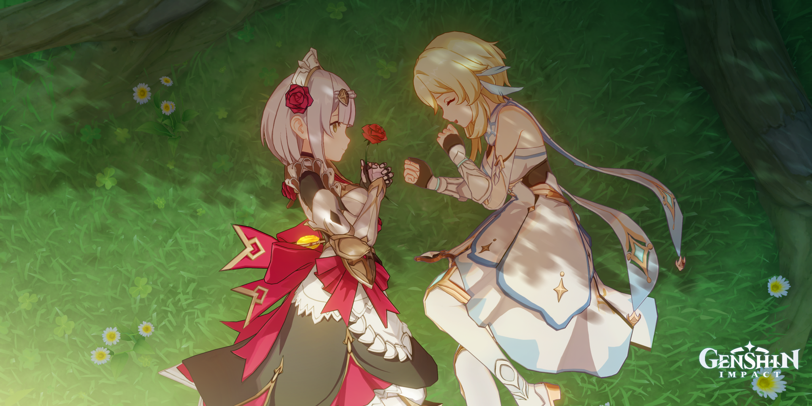
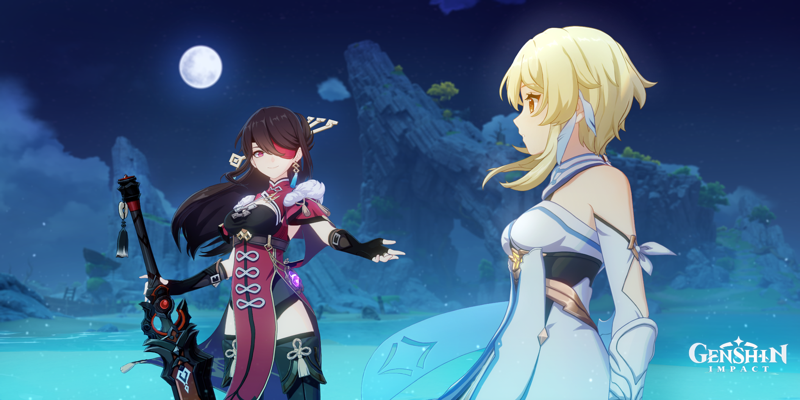
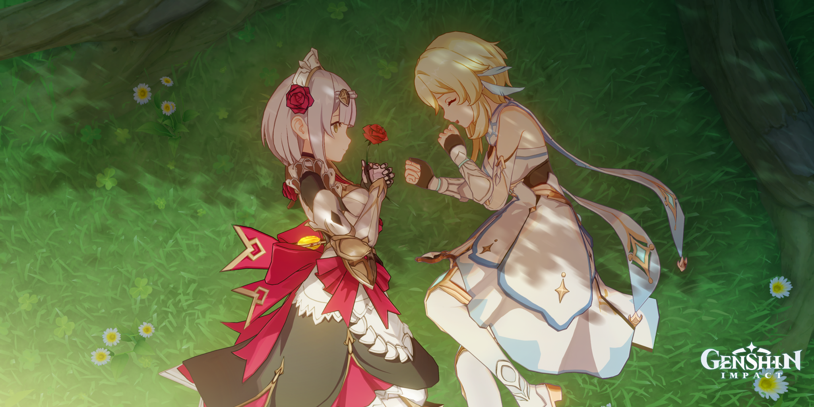

genshin impact
Genshin Impact is an open-world, action role-playing
game that allows the player to control one of four interchangeable characters in a party.
Switching between
characters can be done quickly during combat,
allowing the player to use several different combinations of skills and attacks.
why is this my fav game?
genshin impact is the game i spent the most time on i liked the story the controls and the vistials.
also are the character well liked and they all have a backstory.
its a game where they have put at lot of work in
genshin impact
Muse Dash is a rhythm game developed by PeroPeroGames,
and published by XD Network in Japan and hasuhasu outside of Japan.
It was initially released for iOS and Android in June 2018, later being released on Nintendo Switch,
Windows and macOS on June 20, 2019.
why is this my fav game?
i really like this game because i very much enjoy rythm games
and i really like music.
the images and drawiing you can get in the game is also a big part in why i like it.
genshin impact
Set in a mysterious world, Little Nightmares follows the journey of Six,
a hungry little girl who must escape the Maw, an iron vessel inhabited by monstrous, twisted beings.
why is this my fav game?
well to start i really don't like horror games but this one i enjoy it was easy and funt to walk through.